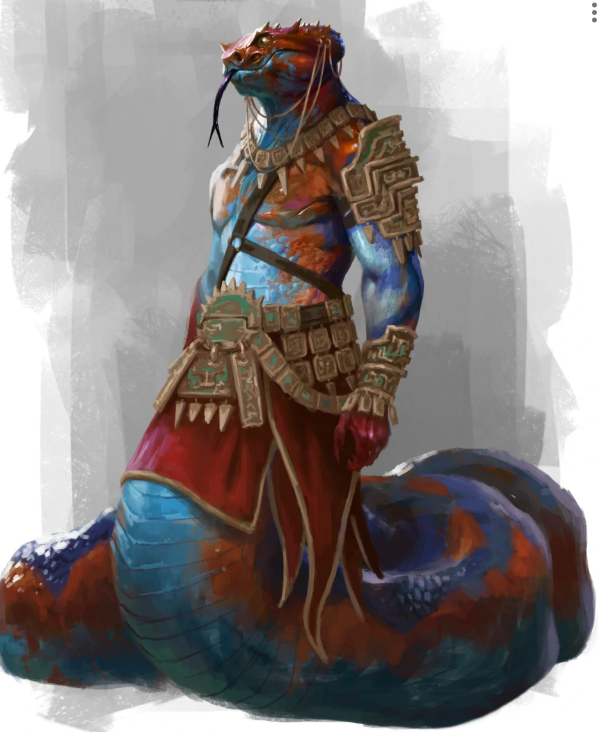

Envoy of the Serref of Ughardi · Finder of Unseen Paths

In public, Cihan maintains a Serpentine Charming illusion: he appears as a noble human on horseback. The mount and disguise are part of the same passive effect.
| Field | Value |
|---|---|
| Name | Cihan Yilan |
| Level | 6 |
| Race | Naga |
| Gender | Eunuch |
| Alignment | Chaotic Good |
| Deity | Finder of Unseen Paths |
| Size | Medium |
| Hair | Black |
| Eyes | Yellow |
| Length | 17′ 8″ |
| Weight | 338 lbs |
| Age | 26 |
| Background | Envoy of the Serref of Ughardi |
| Classes | Shinobi (Infiltrator) 3 / Courtier (Diplomat) 3 |
| Field | Text |
|---|---|
| Personality Trait | Scribe. I write constantly; letters, journals, etc. |
| Ideal | Information is a Weapon. Always learn more than you divulge. Use asymmetries of information as leverage. |
| Bond | Leave of Absence. I have been granted a leave of absence by the Serref and travel papers in order to seek treatment for a magical curse. My responsibilities await me. I remain in touch but my lord's influence is limited outside of her province. |
| Flaw | Unimpeachable. I will never admit fault, and will ensure someone else takes the blame. |
Passive Insight 14. Passive Investigation 15. Passive Perception 14.
Arcana +5, Deception +4, History +5, Insight +4, Intimidation +4, Investigation +5, Perception +4, Persuasion +4, Sleight of Hand +5. Non-proficient skill modifiers are based on raw ability scores (Acrobatics +2, Animal Handling +1, Athletics −2, Medicine +1, Nature +2, Performance +1, Religion +2, Stealth +2, Survival +1).
| Weapon | Hit | Dmg | Rng | Type | Notes |
|---|---|---|---|---|---|
| Swordbreaker | +1 | 1d4 | — | B | Defensive, light, snaring (DC 10) |
| Naginata | +5 | 1d10 | — | S | Defensive, finesse, reach, two-handed |
| Sling | +1 | 1d4 | 30/120 | B | Ammunition |
| Shuriken | +5 | 1d4 | 15/60 | P | Ammunition, finesse, light |
Shuriken. When you hit with a thrown attack using a shuriken, if you are proficient in ninja tools, you can cause the target to suffer the distracted condition (−2 AC, removed when hit by an attack).
| Feature | Effect |
|---|---|
| Cold-Blooded | Disadvantage on checks and saves to resist extreme cold; vulnerable to cold damage. |
| Amphibious | In clean fresh water, can breathe submerged. |
| Swim Speed | 35 feet. |
| Expanded Senses | Advantage on Perception (smell). See heat sources within 30 ft as silhouettes (yellow=cool to red=very hot). Feel vibrations within 30 ft through shared contact surfaces — +5 passive Perception against stealthy approachers. Does not apply to flying or incorporeal creatures. |
| Serpentine Charming | Passively maintains an illusory identity (another species, possibly riding a mount or flanked by attendants to account for size). Most creatures accept the illusion unless given reason to question it. Piercing it requires Investigation or Perception, DC 12 + proficiency bonus (currently DC 15). Details can be changed after a long rest. |
| The Unity | During a short or long rest, instead of gaining the rest's benefit, send a telepathic message to one known creature at any distance. Target hears but cannot reply unless they also have this ability. |
| Constriction | +1 CON (already in scores, max 20). +5 to contested STR rolls to maintain a grapple. A grappled creature suffers bludgeoning damage equal to proficiency bonus (3) at the end of its turn. |
| Feature | Effect |
|---|---|
| Merciless Strike | +1d4 damage per negative condition the target suffers, max 2d4. Usable multiple times per turn, but not on the same creature more than once per turn. |
| Ninjitsu | DEX is the ninjutsu ability. Ninjutsu attack modifier = proficiency + DEX (+5). Ninjutsu save DC = 8 + proficiency + DEX (DC 13). |
| Expert Prowler | Climbing costs no extra movement. Can run and traverse rooftops silently. Advantage on Stealth when 10+ ft above or below all creatures hidden from. |
| Ninja Tools (2) | Up to 2 prepared at level 3. After use, expended. Prepared during long rest if not restrained. Currently prepared: Smoke Screen, Venom Vial. |
| Nimble | Once per turn when leaving a hostile creature's reach, spend 15 ft of movement to force an INT save. On fail, target gains Disoriented (no opportunity attacks) until end of Cihan's next turn. |
| Acute Recall | Perfect recall of troop numbers, patrol routes, layouts, and document contents seen or read at least once. Notices and can imitate even minor mannerisms and regional speech patterns from observed individuals. |
| Hide in Plain Sight | Proficiency in CHA saves. Add CHA modifier to Stealth in crowds. Double proficiency on impersonation checks of anyone observed for 5+ minutes; observer DC to spot façade flaws +5. |
| Overwhelming Assault | On an attack against a creature unaware of Cihan, viewing him as an ally, or in the first round / surprise round of combat: target makes a WIS save or is stunned until end of its next turn. |
| Feature | Effect |
|---|---|
| Intrigue Dice (4d6) | Pool of dice fueling rhetorical flourishes. |
| Intrigue Dice Recovery | Recover half on short rest, all on long rest. When spending dice, recover one die per result of 1 rolled. (Higher recovery thresholds unlock at levels 10 and 19.) |
| Strategic Opening | Once per round when attacking or using a flourish on a creature: expose a weakness. Until start of Cihan's next turn, the next time another creature hits the exposed target, that attack gains bonus damage equal to proficiency bonus or courtier level, whichever is lower. |
| Stirring Words | Proficiency in CHA saves (3rd level). When all intrigue dice are spent, can still use Timely Advice, rolling a d4 in place of an intrigue die. Cannot recover intrigue dice from such a d4. |
From the Courtier class, with +2 additional flourishes from the Keen Study background feat. Flourishes confirmed on sheet:
| Flourish | Type | Effect |
|---|---|---|
| Timely Advice | Support, Reaction | When an ally is targeted by an attack or forced to save: spend 1+ intrigue dice (up to proficiency bonus). Ally gains bonus to AC for the attack or to the save, equal to the highest die result. Both must be able to perceive and understand each other. |
| Rustling of Leaves | Intuition, Bonus Action | Speak flatteringly or mockingly of a perceivable creature. Spend bonus action + 1+ intrigue dice. CHA (Persuasion) + highest die vs target's passive Perception. On success, learn one clue: most valued possession on/near them; damage resistances and immunities; saving throw modifiers; CR (NPC) or class levels (PC); reactions, legendary/lair actions. Roll 8+ on a die: two clues. Roll 10+: three clues. |
| Truth Burns through Lies | Intuition, Reaction | On a successful INT, CHA, or WIS save: spend reaction + 1+ intrigue dice. Choose creatures who can perceive Cihan, up to highest die result; each gains advantage on its next INT/CHA/WIS check or save this encounter. If highest die is 8+: they also gain advantage on passive Perception (+5) until end of encounter. |
| Careful Cadence | Support, Bonus Action | Pass a covert message via coded words, gestures, looks. Spend bonus action + 1+ intrigue dice. Convey message to recipients (up to WIS modifier) who can perceive Cihan; message word limit = highest die + WIS. Then DEX (Sleight of Hand) + highest die vs passive Perception of each non-recipient. Lower passive: unaware a message was passed. Higher: knows a message passed but not its content. |
| Move as Your Own Piece | Scheme, Action | Choose a creature within 5 ft that can perceive Cihan. Spend action + 1+ intrigue dice. CHA (Deception) + highest die vs target's passive Perception. On success, choose one of the target's actions and it immediately uses that action; Cihan chooses any targets or area. Must already be aware the creature possesses that action. |
| Align Interests | Scheme, Action | Choose a creature that can perceive and understand Cihan. Spend action + 1+ intrigue dice. CHA (Persuasion) + highest die vs passive Perception + 5. Advantage if motivation is known; +2 per gathered clue. On success: target is charmed by Cihan until harmed by him or his allies. On failure: target is provoked (disadvantage on attacks against creatures other than Cihan) until end of its next turn. Once per target per long rest. |
Keen Study. +1 intrigue die, +2 rhetorical flourishes.
Cihan's ferrosis infection is tracked as a custom statistic, PHY 2. The mechanic is a separate progression that grants Phyrexian abilities at the cost of stat damage, exhaustion, and rising PHY.
| Mechanic | Detail |
|---|---|
| Checking Phyresis | Choose a stat. Make a save DC 10 using that stat; subtract PHY from the die. Success: access Phyrexian feats and spellcasting until next long rest. Failure with result ≥1: same access but also choose one cost from the list below. Failure with result ≤0: same access but choose two costs. All items must be chosen before any is chosen again. |
| Failure costs | Take one level of exhaustion; take one damage to the chosen stat; increase PHY by 1. |
| On Long Rests | May choose to maintain current exhaustion and recover one fewer hit die on a long rest, instead, to maintain Phyrexian access without checking. |
| Phyrexian Spellcasting | Spell slots equal number of hit dice. May cast spells up to PHY in level. Higher levels cost an additional hit die per level. Alternative cost: roll 1 hit die and take twice that amount + PHY in damage instead of spending a hit die. |
| Spellcasting Ability | PHY is used as the spellcasting ability modifier. Spell save DC = 8 + proficiency + PHY. Spell attack = proficiency + PHY. |
| Name | Tier | Effect |
|---|---|---|
| Gradually Succumb | 1 (Ability) | Choose a stat not yet chosen. From now on, use PHY in place of that ability modifier. |
| Costly Success | 1 (Ability) | After rolling a saving throw, may take damage to the relevant stat to increase the die result by that amount. |
| Fueled by Ferrosis | 2 (Ability) | Ignore disadvantage from exhaustion when making a test using PHY. |
| Like Calls to Like | 2 (Ability) | Disadvantage on WIS/INT/CHA saves to resist the power of other creatures under the influence of phyresis. |
| Chitinous Carapace | 1 (Feat) | When unarmored (no shield), AC counts as 16 when taking damage from the back. |
| Latent Potence | 2 (Feat) | As an action while bloodied, or as a reaction when HP reduces to zero: gain +1 PHY, immediately regain 2d8 HP, gain a corrupted power until end of encounter. Once per long rest. Corrupted power: Beguiling Voice. On CHA or PHY checks against another entity, advantage if Cihan knows one or more of that entity's motivations. Can cast Hold Entity and Charm Entity once per day. |
| Heat Vision | 1 (Magic) | Cast Heat Metal without components on a target seen within range. A stare must be maintained in addition to concentration. While maintained, disadvantage on Perception; attacks not in line-of-sight against Cihan have advantage. |
| Hold Entity | 2 (Magic) | Cast Hold Person on any animate target up to 60 ft away. PHY save or paralyzed; new save at end of each turn (advantage if larger than medium). Requires Beguiling Voice. |
| Charm Entity | 2 (Magic) | Attempt to charm an entity within 30 ft. PHY save (advantage if perceives Cihan as enemy). On failure, charmed until spell ends or until harmed by Cihan or allies. Target regards Cihan as a friendly acquaintance. On end, knows it was charmed. Requires Beguiling Voice. |
Smoke Screen. 1 action, range 30 feet. Throw a smoke grenade that detonates at a point in range and rapidly expands to cover a sphere with a 10-foot radius. The affected area is heavily obscured for 2 minutes. If thrown at his feet, Cihan can immediately take the Hide action as a free action. A creature proficient in ninja tools is trained to fight within smoke screens — Cihan does not have disadvantage when attacking within a smoke screen, and other creatures do not gain advantage when attacking him from within a smoke screen.
Venom Vial. 1 action, range self. Coat a weapon in a unique brewed poison. The next successful attack with the weapon forces the target to make a Constitution saving throw. On failure: 1d6 poison damage and the poisoned condition for 1 minute. On success: half damage. Poisoned target may save again at end of each of its turns to end the effect. A vial holds three uses. Poison applied to a weapon loses potency if unused for 4 hours.
| Item | Qty | Weight |
|---|---|---|
| Belt Pouch | 1 | 1 lb |
| Bandoleer / Quiver | 1 | 1 lb |
| Sling bullets | 10 | 2.5 lb |
| Shuriken | 10 | 2.5 lb |
| Total carried (no pack) | 7.3 lb | |
| Item | Qty | Weight |
|---|---|---|
| Infiltrator's equipment | 1 | 25 lb |
| Invisible Ink Set | 1 | 5 lb |
| Journal (contacts) | 1 | 2 lb |
| Letter of introduction | 1 | 0.1 lb |
| Calligraphy set | 1 | 5 lb |
| Total in backpack | 37.1 lb | |
Contents weight tracked at 3 lb total but listed as no-encumbrance per the sheet.
15 gp. Coin weight included in totals (0.3 lb).
Light 35 / Heavy 70 / Max 105 lbs. Current total with pack: 44.4 lbs.
Cihan secured support from the Pickling Guild in Skudderby in exchange for a supply of kruthik brains. The initial conversation was with Elder Beorn and his protégé Ikemba, in an office in the market district. The setting was not conducive to full disclosure; the parties agreed to meet for dinner to discuss further. The kruthik brain supply was the exchange for the Guild's help in finding workers to help build the span bridge across the Lani tributary near Ul-Tanat in Ughardi.
Nizaj Amut, the disgruntled satrap of Ul-Tanat, initially refused to sign off on the bridge project. Cihan forged his signature on documentation for worker hirings and sent letters of confirmation to the Serref. Nizaj now cannot get out of the project but has been trying to delay it. Cihan undercut him by obtaining forged approvals to source workers through Skudderby, paying better than Nizaj is known to.
Elemental beings — described as spirits aligned with stones, sunlight, water, and mist — began aggressively interacting with workers near the Lani tributary. Cihan, asked how he would respond, was not impressed. He stated that if the spirits caused enough issues he would order a temporary dam built upstream. He acknowledged the threat ("if you want this tributary to remain, you will leave us be"), and was not opposed to diverting the tributary, though he would rather avoid the large project of doing so. The water flows into the Trin downstream, into Greater Skai territory.
Water flows where it must. — Cihan, on the elemental harassment
The party was sent by Cihan to deliver an ultimatum to the elements. On arrival they learned that the river spirits had an ancient compact with the shamanic / druidic peoples of long ago: that no one would ever build there, and the land would be a sanctuary. That no living person was party to that bargain did not matter to the spirits. The party took the spirits' side. Drastic action was warned. Three days were given for people to remove themselves before the elements acted in earnest.
During the party's trip, Cihan was called away on official Serref diplomatic business. He left his authority with a trusted overseer and began a multi-day journey to the capital. The diplomatic matter was knotty and took several days to resolve.
During the journey, Cihan was unexpectedly visited by Xeric Umqun, the grey alien (ultroloth) whom Cihan had previously met (in an encounter that also involved Fade). Xeric expressed displeasure at Cihan's lack of effort to curtail the disease, stressing that it was in the best interests of all to deal with it expediently. After receiving Cihan's answer, Xeric left.
Approximately five days after Cihan left, his network reported a localized elemental apocalypse at the construction site. Five survivors raved about stones and sunlight and water and mist and an avatar of death come to life, destroying everything. A scout confirmed: all present were dead, every building thrown down, all materials scattered or destroyed. Reports also cited people who had left earlier, on account of the elementals' warning and a curse or sabotage (depending on the account). Every person from Skai had already left prior to the event. An official declaration from the Pickling Guild was submitted to Cihan stating, in essence, that the deal had not covered such hazards; until the safety issue was remedied, help would be withheld, and any loss of material or working hours during those days would be billed to Cihan. No further help would be provided until the bill was paid.
The satrap of Ul-Tanat had a field day with this information, claiming it as proof he had never wanted to support the project in the first place, and blaming Cihan for the deaths of his citizens.
The party's thief, Zalia, was made aware through one of her smuggler contacts that her second most trusted smuggler contact had gone off-grid. This was the previous satrap of Ul-Tanat, who had been ousted and is now threatened with imprisonment or execution. She had been manipulated into performing official acts that could then be deliberately interpreted as treasonous actions. The work was structured so that she voluntarily gave the orders that led to the problems — ensuring her actions, though contrived, were definitively her own. The setup had the Serref's permission and Cihan's oversight, in favour of another official who wanted the position.
An extradition order for her has been agreed to by all the major areas of Greater Skai. She has gone into hiding. Zalia has been asked to help her find a way out. The presence of Ughardi soldiery, bodyguards, and spies in Skudderby — which arrived with Cihan — is now the reason this contact has gone off-grid. She is also the cousin of the party's ranger. If she is brought to Merv, the Ughardi capital, she will be executed.
The players, and Carolyn's character in particular, dislike Cihan strongly. At one point an inadvertent opportunity arose to do something nasty to him, and Carolyn's character took it without warning. Cihan has been an example, for Carolyn's character, of who not to give the info to regarding ferrosis.
Well you know that this means war. — GM, on Cihan's likely response to the apocalypse and Guild bill
A letter written by Cihan, addressed to "most excellent suzerain." The letter was translated into Pavish — an invented language (originally by another player, Clay) being borrowed by the table as a spy-cipher. The Pavish copy is the version that would circulate; the English draft below is the underlying text.
The thief, with Thieves' Cant, might have a hope of decoding this — there may be formative similarities in the grammar. Even a natural 20 only gives the gist immediately and some clues for later decipherment; failure is utter incomprehension. Except on a natural 1, the words "Ughardi" and "Cihan" are likely recognizable. — GM design note on decoding
| Thread | State |
|---|---|
| Two sets of plans | Cihan maintains two construction plan sets — one for Skudderby and surrounding folk, one for Ughardi workers — with "extra bits" hidden on the Ughardi-only version. Labor was divided across the water to help prevent lamentable mishaps between peoples. |
| Ikemba as ambassador | Possibility of Ikemba being sent in an ambassadorial role on the construction project, so the Guild can keep eyes on what their support funds. The project falls within generally agreed Ughardi borders, and Skai would want their own there. |
| Quarry hazards | GM-planned: surprising creatures unearthed at quarries for the project, causing delays in building supplies and potential unrest among workers who thought their employment and pay was a sure thing. May occasion seeing Cihan there. |
| Disputed quarry | The best quarry for bridge stone is on land that could be construed as legal grounds for Ughardi use, but is claimed by Skai Holt. Quarrying was discontinued there because of what might be viewed as superstitious views of something living below which was disturbed. Cihan was involved only in the initial arrangement, and as the velvet-gloved fist should pressure be necessary to maintain production targets or protect the industry / property. Ughardi response to Skai complaint is "our citizens employing your citizens and improving your economy"; not a diplomatic incident unless Skai authorities try to divest the owner or shut down the quarry. |
| Ferrosis tainted shipment | GM-planned: a tainted shipment of something to spread ferrosis, originating from Ughardi — possibly not from Ul-Tanat but further inside Ughardian territory. |
| Yra Noctis Osric | The quiet Pickling Guild member who is disturbed by the infighting between Grigor Akklasia and X Chauncey. Identified by the GM as a legitimate, well-intentioned person to whom ferrosis information might be safely given. |
| Player infection rule | GM rule for the infected player: every dawn, roll a d20. On a 1, reassign one mental skill point from a score above 5 to a physical score (can increase skills beyond 20). If/when all mental stats are 5 or lower, the character is effectively bestial and no longer has a soul. Changes are permanent. There is at least a week of delay before the disease is cured. After a week, the d20 roll also determines whether the disease is cured (on a 20). |
| Rescue mission | The party is on a rescue mission for Zalia's smuggler friend / the ranger's cousin / the previous Ul-Tanat satrap, currently being brought back to Ughardi (likely to Merv) for execution. |
| Cihan's "personal business" | The Pavish letter explicitly distinguishes Cihan's official Serref work from unnamed "personal business" requiring "further time and research." Cihan was infected with ferrosis before he met Fade. |